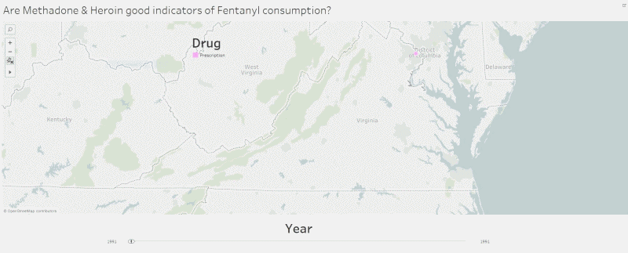

- 


Hover on image for information
What is on your mind?
-
James
7 mins ago
- I think this does not make sense because of x reasons , which is again due to y reasons . Taylor 14 mins ago
- I do not agree with what has been said because of x2 reasons , because of this and that as well . This is a sentence which does not make sense that I am typing in because I don't think people can read this fine a print with a 720 P display .